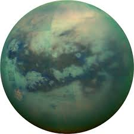
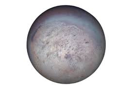
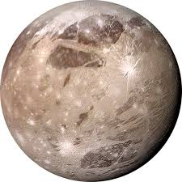

Solar System |
The solar system is home to over 200 known moons, each unique in size, shape, and features. Earth has just one moon, but other planets like Jupiter and Saturn have dozens. Jupiter’s Ganymede is the largest moon and even bigger than Mercury. Saturn’s moon Titan has thick clouds and lakes of methane. Neptune’s Triton orbits backward, which is very rare. Some moons may have underground oceans that could support life. These moons help scientists understand how planets formed and how life might exist beyond Earth.
Moon (Earth)Earth’s Moon is the fifth-largest moon in the solar system and the only one humans have visited. It has a rocky surface covered in craters, mountains, and flat plains called maria, formed by ancient lava flows. The Moon has no atmosphere, so temperatures vary widely, and there's no weather. It plays a vital role in Earth’s tides due to its gravitational pull. The Moon is about 3,474 km in diameter and orbits Earth every 27.3 days. It formed about 4.5 billion years ago, likely from debris after a massive collision between Earth and another celestial body. |

|
Titan (Saturn)Titan is the largest moon of Saturn and the second-largest in the solar system. It has a thick, orange-colored atmosphere made mostly of nitrogen, with methane and ethane. Its surface is freezing cold, around -179°C, and features rivers, lakes, and seas—not of water, but of liquid methane and ethane. Titan's icy crust covers a possible subsurface ocean. It’s the only moon known to have a dense atmosphere and stable surface liquids, making it one of the most Earth-like places in space. NASA plans to explore it further with the Dragonfly drone mission in the coming years. |
 |
Triton (Neptune)Triton is the largest moon of Neptune and one of the most unique moons in the solar system. Unlike most moons, it orbits Neptune backward, suggesting it may have been captured from the Kuiper Belt. Triton has a very cold surface, with temperatures around -235°C, and is covered in nitrogen ice. It has a thin atmosphere and active geysers that shoot nitrogen gas into space, making it one of the few moons with signs of activity. Scientists believe Triton might have an ocean beneath its icy crust, which could hold clues about life beyond Earth. |
 |
Ganymede (Jupiter)Ganymede is the largest moon in the solar system and orbits the planet Jupiter. It is even bigger than the planet Mercury, with a diameter of about 5,268 kilometers. Ganymede is the only moon known to have its own magnetic field, likely created by a liquid iron core. Its surface is a mix of rocky regions and icy areas with grooves, showing signs of geological activity. Scientists believe there is a salty ocean beneath its icy crust, which might hold conditions suitable for life. Ganymede’s size, magnetic field, and possible ocean make it a fascinating target for future exploration. |
 |
Designed and developed by Ishika Ahuja 6G